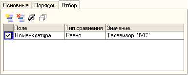
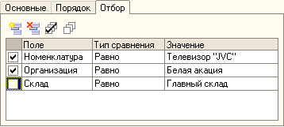
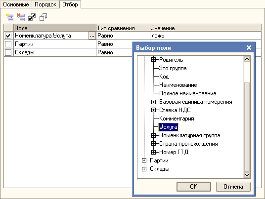
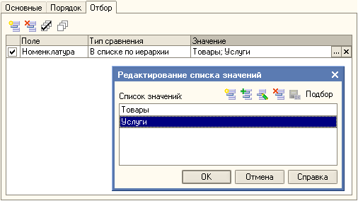

Отбор в стандартных отчетах
Для чего нужен отбор?
На закладке отбор задаются условия для ограничения данных, выводимых в отчет.
Например, при указанной настройке отбора в отчет попадут данные только по номенклатуре "Телевизор "JVC".

Какие условия ограничивают выводимые данные?
В отчет выводятся данные, удовлетворяющие каждому условию помеченному флажком.
Например, при указанной настройке отбора в отчет попадут данные по номенклатуре "Телевизор "JVC" и организации "Белая акация".
Строка склад Равно "Главный склад" не учитывается, т.к. она не помечена флажком.

На какие поля можно можно ставить условия в отборе?
Условия можно ставить на предложенные по умолчанию поля, их реквизиты и другие доступные поля для отбора, которые можно выбрать в форме "Выбор поля".
Например, при указанной настройке отбора в отчет попадут данные с номенклатурой, которая не является услугой.

Что такое Тип сравнения?
В колонке "Тип сравнения" указывается тип сравнения поля со значением, укзанным в колонке "Значение".
"Тип сравнения" может быть:
- Равно - значение поля должно совпадать со значением условия
- Не равно - значение поля должно не совпадать со значением условия
- Меньше - значение поля должно быть меньше значения условия
- Меньше или равно - значение поля должно быть меньше или равно значению условия
- Больше - значение поля должно быть больше значения условия
- Больше или равно - значение поля должно быть больше или равно значения условия
- Интервал (>, <) - значение поля должно быть в интервале двух значений условия
- Интервал (>=, <=) - значение поля должно быть в интервале включая границы двух значений условия
- Интервал (>=, <) - значение поля должно быть в интервале включая левую границу двух значений условия
- Интервал (>, <=) - значение поля должно быть в интервале включая правую границу двух значений условия
- Содержит - значение поля должно содержать в себе строку, указанную в значении условия
- В списке - значение поля должно присутствовать в значении условия
- В иерархии - значение поля должно либо совпадать, либо присутствовать в папке, указанной в значении условия
- В списке по иерархии (см. пример) - значение поля должно совпадать с любым значением из списка или распологаться в любой папке, указанной в значении условия.
- Не в списке - значение поля должно отстутствовать в списке значений условия
- Не в списке по иерархии - значение поля должно отсутствовать в списке и папках, указанных в значении условия
- Не в иерархии - значение поля должно должно не совпадать и отсутствовать в папке, указанной в значении условия
- Не содержит - значение поля не должно содержать в себе строку, указанную в значении условия
Например, при указанной настройке отбора в отчет попадут данные со всей номенклатурой , которая находится в папках "Товары" и "Услуги".
